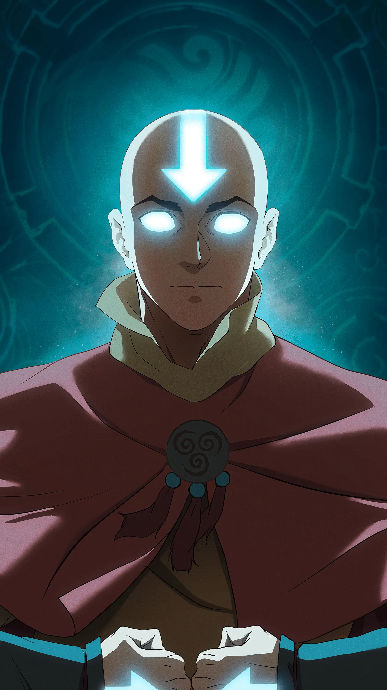

← Voltar para os filmesANIMAÇÃO • FANTASIA
Avatar Aang: O Último Mestre de Ar
Aang, o último Mestre do Ar do mundo, parte em uma jornada épica para encontrar um poder ancestral capaz de salvar sua cultura da extinção.

Aang, o último Mestre do Ar do mundo, parte em uma jornada épica para encontrar um poder ancestral capaz de salvar sua cultura da extinção.